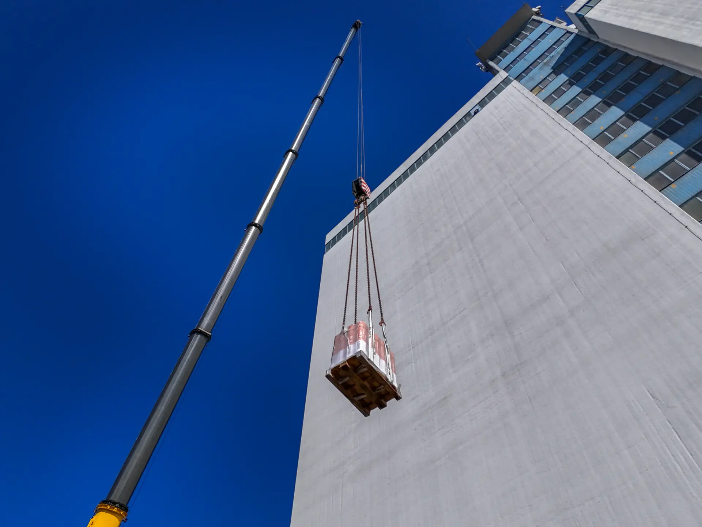
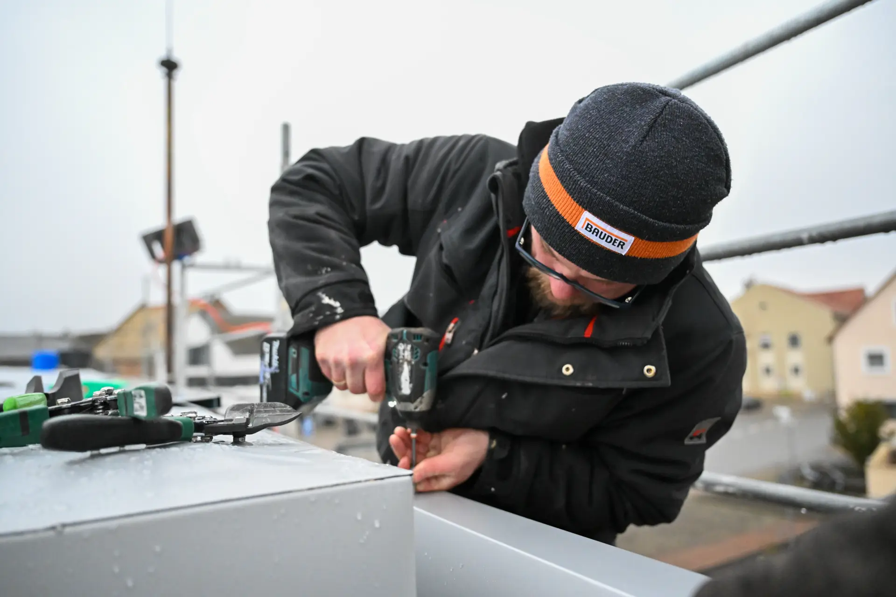

Dachdecker Meisterbetrieb · Worms
Ganz oben.
Ganz nah
am Detail.
Dachdeckerei S. Schott nennt Dacheindeckungen, Spenglerarbeiten, Reparaturen, Fassadenbekleidung, Flachdachabdichtung und Speicherdämmung.
Leistungen ansehen ↓Weinsheimer Postweg 5 · 67551 Worms06241 2103528

Leistungen
Was ein Dach zusammenhält.
Die neue Struktur fasst die konkret genannten Arbeiten in klare Bereiche, ohne Materialzusagen, Bauzeiten oder Projektgrößen hinzuzuerfinden.
Dach-
eindeckungen
Spenglerarbeiten & Reparaturen
Fassade, Flachdach & Dämmung

Handwerk im Einsatz
Die Arbeit steht im Bild.
Die originale Gimbsheim-Aufnahme zeigt eine reale Arbeitssituation aus dem öffentlichen Schott-Auftritt. Sie verbindet das neue Design direkt mit dem dokumentierten Handwerk.
Referenzen
Orte, die sichtbar bleiben.
Der bestehende Auftritt führt die Referenzbereiche Rhenania Worms, Neuhausen und Gimbsheim. Das Konzept nutzt diese Namen als Orientierung – nicht als Aussage über Umfang, Bauzeit oder Ergebnis einzelner Aufträge.
ReferenzRhenania Worms
ReferenzNeuhausen
ReferenzGimbsheim
Kontakt
Das Dachprojekt
besprechen.
Die öffentlich sichtbaren Kontaktwege werden im Konzept direkt auffindbar. Besuchs-, Anfrage- und Serviceprozesse werden vor der Veröffentlichung final abgestimmt.
Telefon06241 2103528
AdresseWeinsheimer Postweg 5
67551 Worms
67551 Worms
E-Mailinfo@dachdeckerei-schott.de
[NEEDS INPUT: aktuelle Öffnungszeiten, Anfrageprozess und Rechtstexte vor Veröffentlichung bestätigen.]